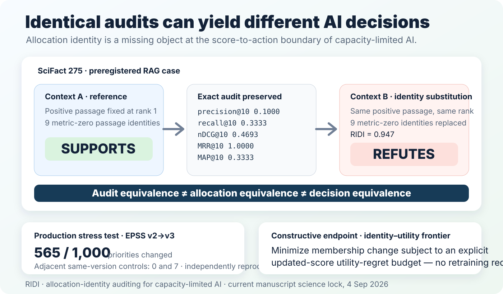

Identical audits can yield different AI decisions.
When an AI system turns scores into a finite queue, shortlist or context window, the audit can be exactly reproducible while the identities receiving the scarce slots remain unidentified.
RIDI is the research programme and open-source toolkit for measuring, certifying and controlling allocation identity at the score-to-action boundary.

Exact audit equivalence did not imply behavioral equivalence.
Equal-dataset-weight macro benchmark-defined correctness divergence at the primary Qwen3-8B/BM25/k=10 condition; 95% CI 14.60–20.03%.
The positive passage and every registered retrieval metric stayed fixed while nine metric-zero passage identities changed.
Macro correctness divergence when membership stayed identical and only metric-zero passage order changed.
Most benchmark-defined outcomes remained stable. The result establishes behavioral non-equivalence inside the registered audit-equivalence class; it does not claim universal fragility or net harm.
EPSS changed who occupied a real priority queue.
Top remediation priorities changed; RIDI=0.722.
Changed priorities in neighboring same-version comparisons.
Two external executors reproduced the sealed deterministic EPSS numerical workflow in separate environments.
Delayed CISA KEV evidence was sparse and cutoff-dependent, so the production turnover result is not equated with harm or benefit.
Measure turnover, then bound what is avoidable.
The exact identity–utility frontier computes the minimum membership change compatible with an explicit updated-score utility-regret budget using stored scores and no retraining.
Representation-associated turnover avoidable at eta=0.001; 95% CI 76.0–81.4%.
Turnover avoidable at k=100; 95% CI 27.6–29.7%.
Turnover avoidable at eta=0.0001 while retaining all 12 delayed KEV positives in the primary top-1,000 window.